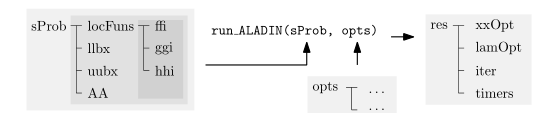
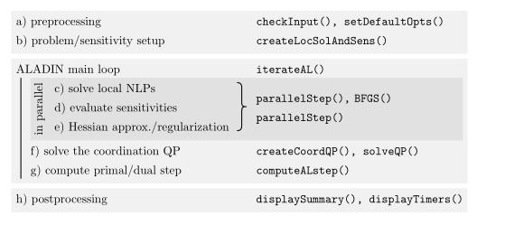

Code structure
Solver input and output
The following figure summarizes the input and output structures sProb and res of ALADIN-\alpha.

ALADIN-\alpha is started by running the function \texttt{run\_ALADIN}. As an input, the user specifies structs \texttt{sProb} and \texttt{opts}, where the latter is optional. The struct \texttt{sProb} contains the problem formulation. The struct \texttt{opts} specifies solver options. Possible options are described here. \texttt{sProb} contains five fields namely the objective and constraint functions, which are stored in 1\times \texttt{N} cells and collected in the struct \texttt{locFuns}, the coupling matrices \texttt{AA}, upper and lower bounds \texttt{uubx} and \texttt{llbx}, the start value \texttt{zz0} which all are itself 1 \times \texttt{N} cells (\texttt{N} is the number of subsystems).
The function \texttt{run\_ALADIN} returns a struct \texttt{res} containing a cell \texttt{xxOpt} with the optimal solution, a field \texttt{lamOpt} with the optimal Lagrange multipliers \lambda, a struct \texttt{iter} that loggs iteration results and a struct \texttt{timers} that loggs the times needed for the different iterations.
Solver structure
The code structure is summarized in the following figure. 
In a preprocessing step, the the function \texttt{checkInput} verifies whether \texttt{sProb} and \texttt{opts} contain a valid problem formulation and valid inputs. The function \texttt{setDefaultOpts} supplements missing options in \texttt{opts} with default values. In the following step, the local NLP solvers and sensitivities are constructed in \texttt{createLocSolAndSens}. Thereby, the MATLAB functions given in \texttt{locFuns} are converted to CasADI functions. \texttt{iterateAL} contains the main ALADIN loop. The loop consists of five steps. In the \texttt{parallelStep}, three of them are executed in parallel, namely solving the decoupled NLPs, evaluating the sensitivities and approximating the Hessians. Step four and five solve the coordination QP and compute the primal/dual step. If a certain termination criterion is fulfilled, postprocessing starts displaying the needed number of iterations and displaying timing information.